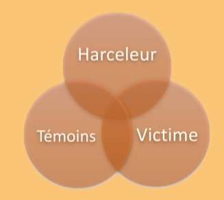

Nous remarquons, dans la grande majorité des cas, une relation triangulaire. En effet, le harcèlement scolaire est un phénomène de groupe et la relation entre victime- harceleur- témoin est centrale.
Harceleur : utilise la force et l'agressivité, généralement, pour dissimuler une image de soi assez fragile.
Victime : on peut parler de bouc émissaire. Il s’agit d’identifier une différence(différence physique, d'identité, d’appartenance à une minorité sociale ou culturelle…) et de l'utiliser pour faire souffrir la victime. Il est difficile, pour eux, de sortir de cette situation car ils se montrent généralement plus fragiles et on souvent honte.
Témoin : les témoins existent sous différents profils.